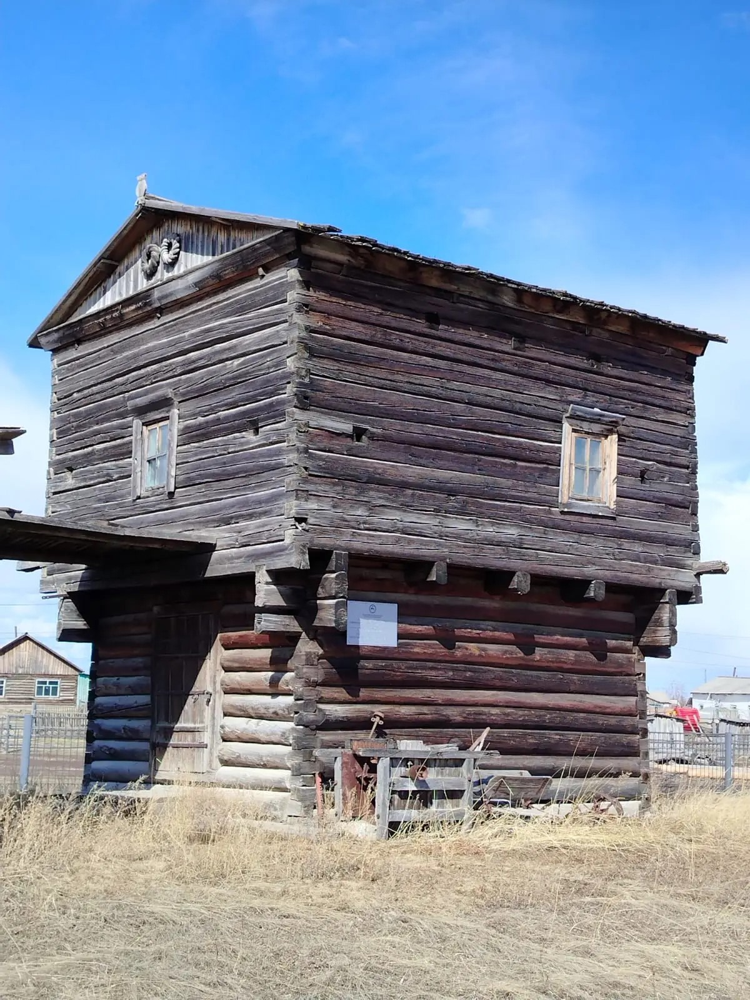
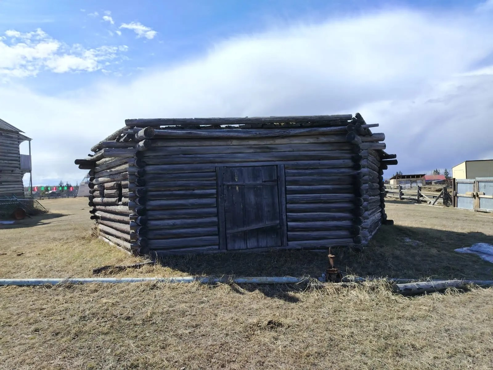
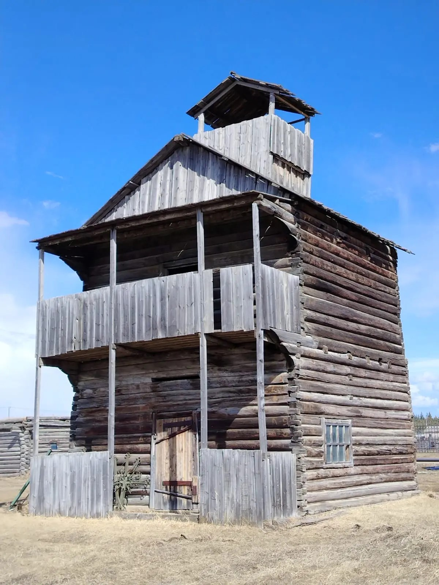

Архитектурное наследие
На территории музея находятся архитектурные памятники XIX века. Эти постройки — живые свидетели быта и культуры якутов, сохранившиеся до наших дней.
Качикатская Николаевская церковь, 1896 г.
Передвиньте стрелки ← → для сравнения. Слева — 1939 г., справа — 2024 г.
Детали архитектуры


Фрагменты тех же архивной и современной фотографий, что и в сравнении выше.
Деревянная Николаевская церковь, построенная в 1896 году в селе Качикат, является одной из старейших сохранившихся церквей Хангаласского улуса. Её архитектура сочетает традиции русского деревянного зодчества с местными приёмами строительства.
Церковь была перевезена на территорию музейного комплекса для сохранения и реставрации. Сегодня она открыта для посетителей и продолжает оставаться духовным центром. Подробнее об основании церкви и комплекса читайте в разделе История.
«Старики говорили, что эта церковь была самым крепким строением во всей округе...»— из воспоминаний старожилов села
Амбар 2‑уровневый богача Кирилла Скрябина, с. Тит‑Эбэ


Два ракурса одного объекта
Детали архитектуры
Крупные планы двух фотографий амбара.
Двухэтажный амбар из села Тит‑Эбэ принадлежал зажиточному якуту Кириллу Скрябину. Нижний ярус использовался для хранения припасов, верхний — как летнее жильё. Постройка отличается сложной конструкцией и богатой резьбой по дереву.
Амбар был перевезён в музейный комплекс «Самыртай» и полностью отреставрирован. Сегодня он является ценным экспонатом, демонстрирующим социальное расслоение якутского общества XIX века.
«Говорят, Кирилл Скрябин был настолько богат, что зерно из этого амбара кормило половину наслега...»— из рассказов потомков Скрябиных
Балаган 6‑гранный, летник Даркылах (семья Марковых)


Два ракурса одного объекта
Детали архитектуры
Крупные планы двух фотографий балагана.
Редкий тип якутской постройки — шестигранный балаган, перевезённый с летника Даркылах, принадлежавшего семье Марковых. В отличие от прямоугольных жилищ, такая форма обеспечивала лучшую устойчивость к сильным ветрам и морозам.
Балаган использовался как зимнее жильё. На сегодняшний день это единственный сохранившийся образец подобной архитектуры в Хангаласском улусе.
«Даркылахский балаган пережил столько бурь, что старожилы считали его заколдованным...»— из легенд семьи Марковых
Башня-двухэтажный амбар с бойницами, сер. XIX в. (ОКН)


Два ракурса одного объекта
Детали архитектуры
Крупные планы двух фотографий башни-амбара.
Деревянная башня-двухэтажный амбар с бойницами, построенная в середине XIX века, является объектом культурного наследия регионального значения. Массивные стены и проёмы для обороны говорят о её двойном назначении — хозяйственном и оборонительном.
Башня перевезена в комплекс «Самыртай» и отреставрирована. Это уникальный образец фортификационной архитектуры якутов, не имеющий аналогов в республике.
«Эту башню строили не для зерна, а для защиты от набегов — из неё просматривается вся долина...»— из архивных записей